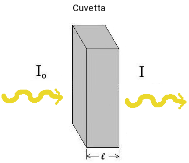

La legge di lambert-Beer, descrivere i fenomeni di assorbimento della radiazione elettromagnetica ed è alla base della spettrofotometria. Supponiamo di irradiare il campione contenuto in una cuvetta, con radiazione monocromatica di intensità I0
Sia I, l'intensità del raggio che emerge dalla parte opposta; I - I0 corrisponde quindi all'intensità della luce assorbita dal campione.
Possiamo definire una grandezza chiamata come
A = log (I0 / I)

in cui T è un'altra grandezza chiamata trasmittanza.
Per una radiazione monocromatica, l’assorbanza, A, è direttamente proporzionale alla concentrazione, c, della specie assorbente. Infatti, se una radiazione di una certa frequenza è assorbita da una molecola, più numerose sono le molecole, maggiore sarà l'intensità della radiazione assorbita di quella frequenza. Nello spettrofotometro il campione è contenuto in una cella (o cuvetta) di dimensioni accuratamente note. La distanza percorsa dalla radiazione attraverso la cella è detta cammino ottico (l). Pertanto, l’assorbanza è direttamente proporzionale sia alla concentrazione della specie assorbente, c, sia al cammino ottico secondo la seguente relazione:
A = log (I0 / I) = ε(λ) ⋅ c ⋅ l
ε è il coefficiente di estinzione molare avente unità di misura M-1 cm-1. Infatti dato che l’assorbanza è adimensionale, c è la concentrazione molare della specie assorbente espressa in molarità, M, ed l è il cammino ottico espresso in cm. Il coefficiente di estinzione molare è una proprietà della specie chimica che assorbe e non dipende dalla concentrazione ma dipende invece dalla lunghezza d’onda della radiazione assorbita.
Da questa legge deriva che gli spettri di assorbimento di soluzioni di una stessa sostanza in concentrazioni diverse avranno la medesima forma e posizione ma i valori di assorbanza crescenti all’aumentare della concentrazione della specie assorbente.
Quindi graficando i valori di assorbanza misurati alla stessa lunghezza d’onda in funzione della concentrazione della specie assorbente si ottiene una retta passante per l’origine degli assi (in assenza di sostanza assorbente l’assorbanza è nulla), con pendenza pari a m=εl.